Echoes From Firelink
A simplisitc fan made Dark Souls 3 resource site
Tips
What you should know when getting into Dark Souls
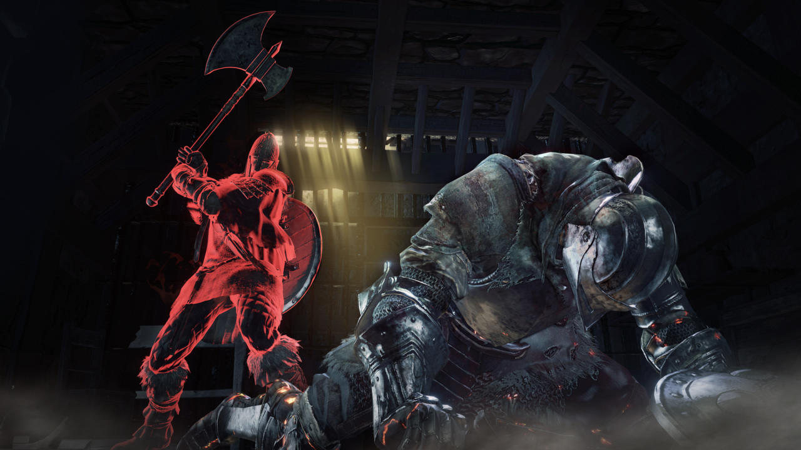Dark Souls 3 demands careful movements and strategy. Its
explanations of gameplay systems and mechanics are vague. The
game instead leaves players to figure out the intricacies over
many hours of gameplay. However, with just a few small considerations
you can significantly reduce your chances of seeing that soul-crushing “You Died”
screen.
These are 10 essential tips to help you in your journey
through the kingdom of Lothric. Some of these are general best
practice rules to guide you through the game, while
others shed more light on specific systems.
Experiment With All Classes
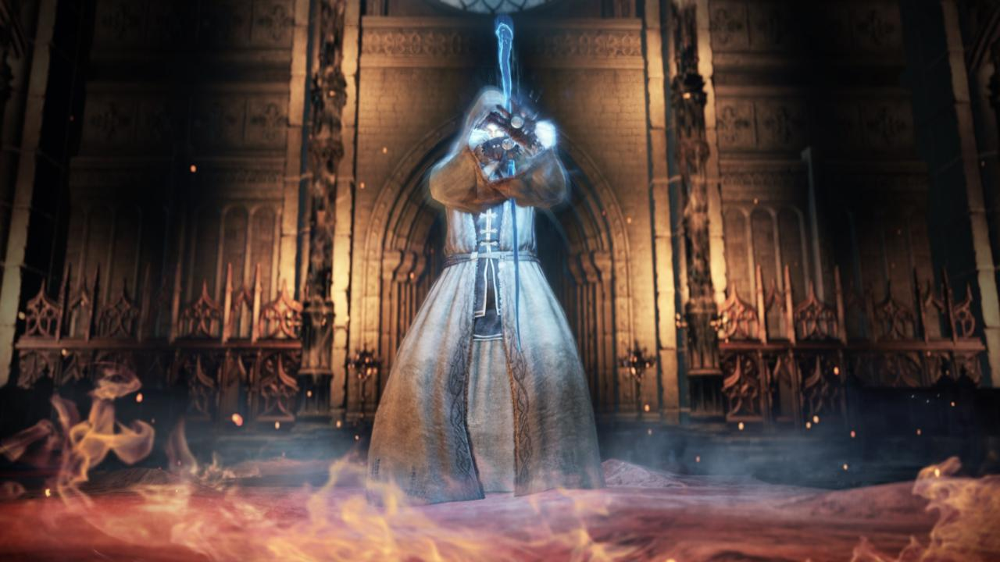Dark Souls 3, like its predecessors, allows players to
build characters that suit different play styles. While it may seem natural
to pick a character wielding a sword and shield at the start, you may
find over time that you prefer ranged attacks or wish you were
a quick-footed thief. Don't be afraid to restart the game and
experiment with another class.
Don't fret over classes too much though. You can start out a Pyromancer
and still roll a max-strength knight. The classes are there to give you
small boosts in how you want to play in the beginning of the game.
There's one class that starts out with all stats at their lowest base
so you can freely build him however your heart desires.
Learn From Mistakes
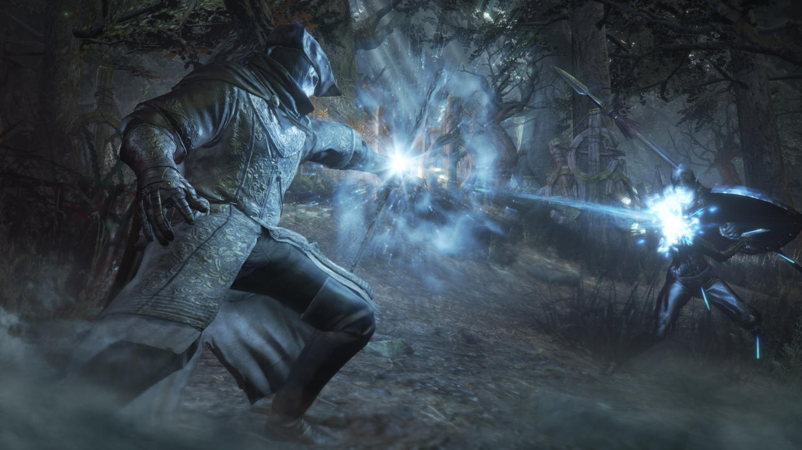Class designations in Dark Souls 3 aren't as rigid as they initially seem.
Generally they just determine the stats you start with, adding more skill
points to disciplines appropriate for the chosen class. A warrior will
begin the journey with higher strength stats, for example, while a magician's
numbers will be tweaked so the character is more miracle-capable
from the outset. These boosts give you a running start down the character
development path, but Dark Souls 3 is open enough to allow you
to branch out.
With enough souls, you can take your sword-and-board character and turn it into
a pocket mage. If this is your plan, make sure you do it from the start and
spread out your upgrades among the appropriate stat categories. As the
game progresses, it takes considerably more souls to level up each time,
so teaching your old dog new tricks becomes much harder.
Plan Your Work, Work Your Plan
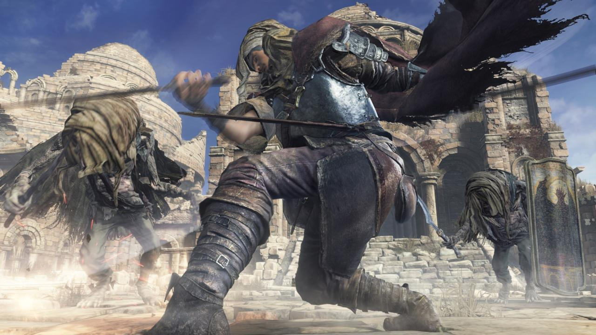To overcome the challenges Dark Souls 3 places in your path,
you have to be studious. You need to observe the enemy,
identify weak points and opportunities to attack, then seize
on them without overextending. In each new enemy engagement,
your immediate strategy should be defensive: raise your shield,
stay mobile, observe your foe’s movement.
Making note of how enemy attacks look is vital because it
allows you to find a safe distance, then counter-attack at
the ideal moments. For Bloodborne players, this is a crucial
point because Dark Souls 3 does not make concessions for offensive
play. When you take damage, you can't recover it by immediately
striking back as you can in Bloodborne, and you'll virtually
never have enough Estus, which is main method of healing in
Dark Souls 3, to make up for repeated missteps. Rewarding
gambles is not built into the core of its gameplay. You are no
longer a sentinel Hunter, you are the fragile Ashen One. Remember that.
Learn To Love Death
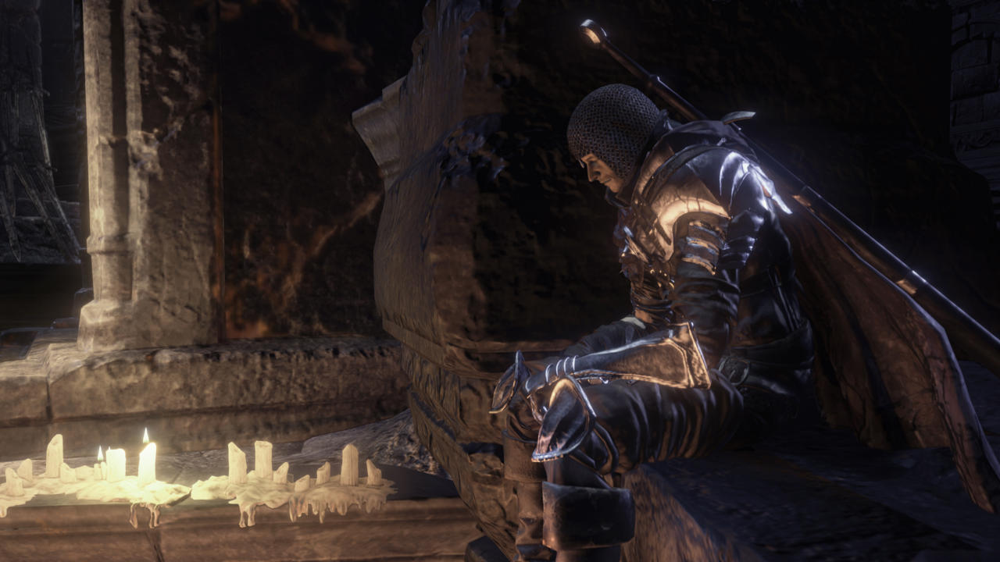The world of Souls is all about cycles of death and
rebirth; its greatest heroes understand this and use it to
their benefit. If you respawn at a bonfire having learned what
mistakes led to death, you should consider this a victory.
It’s a small one, for sure, but an important one.
On your first playthrough, every new area will throw a
different set of challenges at you, and it is natural--almost a given--that
you’ll falter at these points. Similarly, it’s rare that you’ll
beat a boss the first time around, so you should think about
each initial encounter as a fact-finding mission. Limit yourself
to using only Estus, so you’re not pointlessly wasting
consumables that aren’t replenished at a bonfire. The biggest
pitfall newcomers face is giving in to the thinking the game
is cheap, too difficult, or not balanced properly. Everything
is doable, it just requires strategy and, most importantly,
determination. Dark Souls is only as difficult as you allow it to be,
Heal Effectively
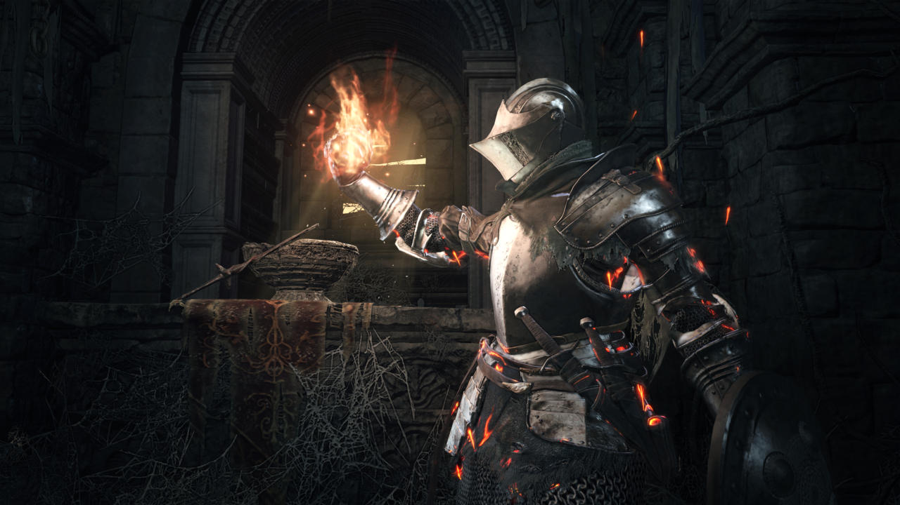Dark Souls 3 uses a number of gameplay systems from
across the series but also introduces a few new ones.
There are intricacies to the way health, focus, and
stamina work that are not explained in a way that’s easy to
understand. Much of it becomes evident as you get deeper
into the game, but it’s nice to have a handle on it from the
start. The red health bar has two states that correspond to whether
your character is unkindled or kindled.
When unkindled, you have less total health than when you
are kindled. You can consume Embers to transform from a shrivelled
undead to a kindled warrior coursing with fire. However, since
Embers are in limited supply, it’s important to make the
most of each one, so use one when your health is low instead
of when it’s already at max. This extends the total size of the
health bar and gives you a free refill. For Bloodborne players,
it’s worth keeping in mind that Estus flasks are replenished
at Bonfires, unlike Blood Vials. However, you’ll get considerably
fewer uses out of them, so play smart.
Focus on Focus
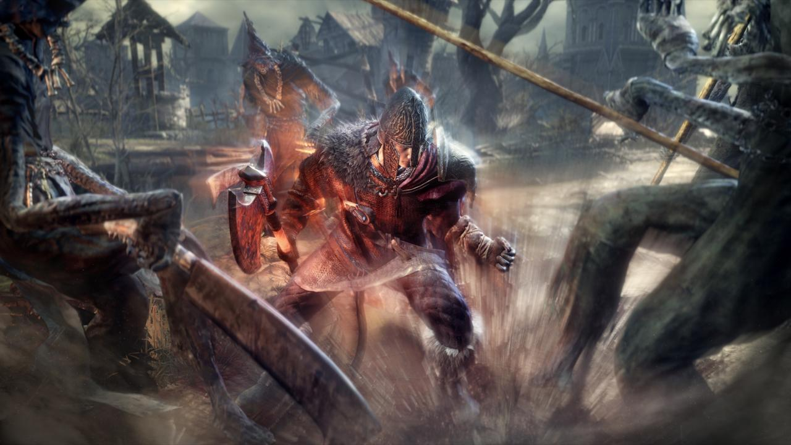The second of the three bars relates to Focus, which
governs the use of Battle Arts--a new gameplay addition
to the Dark Souls series. Many of the weapon classes have
a unique ability associated with them. These range from a
war cry that temporarily boosts attacks to a defensive
stance that lets you parry to a quickstep that moves you
behind enemies (ideal for the offensive style of Bloodborne
players).
The amount of Focus used varies depending on the specific
ability but, like health, the bar is replenished at Bonfires.
It also has its very own blue Estus flask that can be
used to top it up. To start with, each character can use
an Estus flask four times, three times for health and once
for focus. However, by speaking to the blacksmith at your
shrine, you can redistribute these.
It doesn’t cost you anything to redistribute your Estus
allotment, so keep in mind that you can change your
gameplay strategy to match the situation you're preparing
to encounter. If your plan is to go all out on a particular
boss with normal attacks, you may want to move your
entire allotment of Estus’ to health. Or if you feel
like your skill is more important than health recovery,
you can shift it to Focus.
Manage Stamina
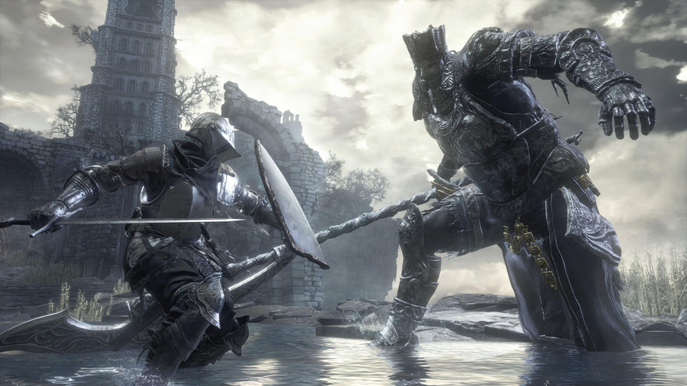The final of the three bars is stamina, which governs
rolling, back steps, sprinting, blocking, and attacking.
Stamina usage requires the most micromanaging as, if not
given the proper attention, it can leave you in a lot of
trouble. Many abilities are hindered if stamina is depleted,
especially your range of movement, your defense, and your
attacking ability. This means that when you’re attacking
an enemy, pay attention to how much stamina you’re using,
because if you spend all of it, you won’t be able to
roll away quickly or hold up your leaving you at the mercy
of the enemy.
Stamina recovers relatively quickly, so for the most part,
it shouldn’t be a problem to keep on top of it. But it’s
important to note two things; First, stamina is used when
you’re holding your shield up and defending. If an enemy
is unleashing a volley of attacks, turtling isn’t a good
idea unless you know your attacker will finish before you
run out of stamina and there won’t be an immediate follow-up.
In many scenarios, a pre-emptive dodge may be the better option.
The second thing to note is that your stamina recovery is
slower when your shield is raised, so when you have a moment
of safety, lower your shield to quickly recover stamina.
Don't Get Greedy
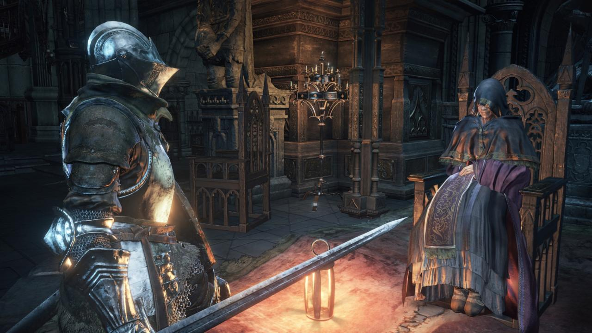Souls are the currency of the game and can be exchanged
for items, weapons, and armour, and can also be used for
crafting and levelling up. They are accumulated by killing
enemies, selling items, or finding the faded souls of
fallen warriors. Use them or lose them! Upon death, all
the souls in your possessions are dropped wherever the
killing blow was struck. The good news is that you can
return to that point and pick them up. The bad news is if
you die again before you do so, they’re gone forever.
For this reason, it’s a good idea to avoid situations
where you have a significant number of souls on you.
Take every opportunity to cash them to level-up or buy
consumables. At the same time, it’s important not to
become too attached to Souls, as it can lead to making
costly mistakes. As with with item pickups placed in the
environments, be suspicious and cautious. It’ll save
your neck more than a few times.
Don't Get Greedy
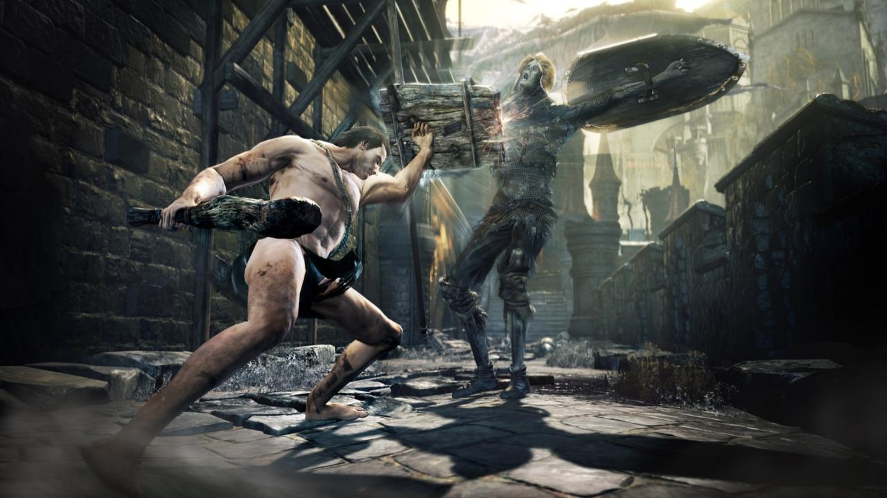Various spells, weapons, and armour have stat requirements
that must be met before they can be wielded effectively.
A character that doesn’t fulfill these requirements may
still be able to equip an item, but it will be less
effective when used. For a greatsword, for example,
the time it takes to swing the weapon may be significantly
increased. For a shield, it may take much longer to
raise it and reduce less damage.
In the stat menu for each item, there is usually a number
denoting the strength, dexterity, intelligence, or faith that
you need to use it. If you haven’t reached that number, it will
be red. Another thing to consider, particularly for
weapons, s the scaling grade the item has in each of
the aforementioned categories. The better the grade the
more effective it will be as you level up that stat. So
a rapier that has a B next to the dexterity stat will
become even more powerful as you spend Souls to improve
your dexterity. On the other hand, if a hammer has an E
grading for strength, it may be worth finding an alternative
as your strength gets higher.
Engage in Jolly Cooperation
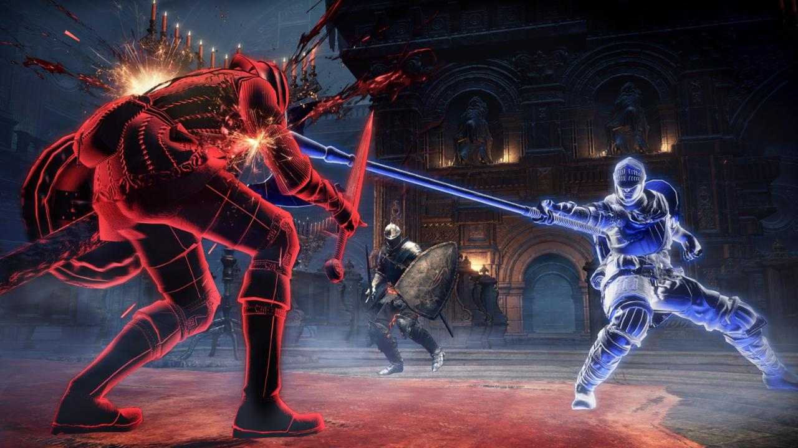Multiplayer is one of the most enjoyable aspects
of the Dark Souls series, but it's also quite
difficult to understand. Each Dark Souls 3 player
inhabits their own world, but at times these overlap.
The most frequent manifestations of multiplayer are
in the soapstone messages and bloodstains. Orange
writings on the ground are messages from other players,
which can provide you with advice or warnings.
Some players even use them to trick people, so beware.
Bloodstains, meanwhile, can be touched to see the
last few moments of another player’s life. This is a
good way to scout upcoming dangers.
In your inventory you'll also find a White Sign
Soapstone, which can be used to place a summoning
point on the ground. Players in other worlds can
interact with these to summon you. If you’re in human
form (Embered) you’ll also see these white signs in your
world, so you can recruit other players or NPCs to
your cause. While in human form, players and NPCs
can forcefully invade your world as Red Phantoms
using Red Eye Orbs, and when this happens you’ll
have to face them in combat. The rewards for defeating
an invader include souls and Embers and new weapons.